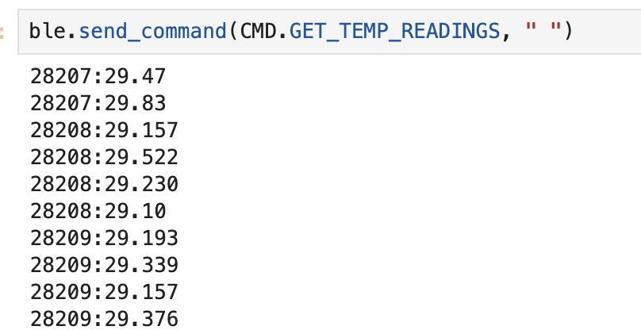
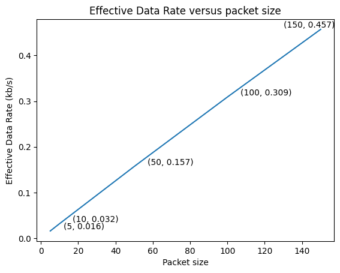

Introduction
The purpose of this part of the lab is to setup and become familiar with the Arduino IDE, the Artemis board and the Bluetooth Low Energy Module.
Let's explain these concepts one by one:
First, in order to control the behavior of a robot, we need a "controller" that could send commands to the robot and receive data from it. In this course, the "controller" we are using is the SparkFun RedBoard Artemis Nano board. Click here to learn more about the board.
Second, for the purpose of rapidly and wirelessly communicating between robot and the computer, we adopt a Blue Bluetooth Low Energy (BLE) communication technology, also known as Bluetooth Smart, which is a wireless communication technology designed for short-range communication with low power consumption. Here is a fantastic summary of Bluetooth Low Energy.
Lastly, we used the Arduino IDE software to write code and program the board. After setting up the Arduino IDE, we could configure the board to either collect data or execute commands received from computer through BLE. The board has a USB-C connector which allows us to pass the code via USB protocol. This website provides detailed instructions to install Arduino IDE.
Parts required
- 1 x SparkFun RedBoard Artemis Nano
- 1 x USB C-to-C cable
Blink it up!
Like the basic "Hello world" example in every programming language, Arduino has a easy "Blink LED" example that blinks a LED on the board. The code can be found in the Examples->01.Basics->Blink file. The program is very simple which initializes digital pin LED_BUILTIN as an output first and then put pin voltage high, wait one second and put it low and wait one second. The Blink example is as simple as it shows. But it is also a good sanity check to make sure the Arduino IDE is installed successfully and the Artemis board is setup correctly.As the video shows, the LED blinks on my Artemis boards without any problems. The default baud rate of communication works well for me.
LED blinks on my Artemis boardSerial Communication
After the basic example, we want to setup the communication between the computer and board so that we can receive the data or information from the Artemis board immediately. This could be very useful for analyze the environment and behavior of the "robot" or simply for debugging if we could see the result right way. Before diving into the wireless communication, we need a wire communication which is faster and more staple. Luckily, the Artemis board has a USB-C port which allows us to use UART to communicate between the computer and the Artemis board. To simply explain this, UART (Universal Asynchronous Receiver/Transmitter) is a hardware communication protocol facilitating asynchronous serial data transfer between devices. Its prominent feature lies in its asynchronous nature, allowing devices to communicate without being tightly synchronized, making it widely used in various applications where simplicity and reliability are essential, such as in embedded systems and computer peripherals. However, we do not need to understand the formate of the UART dataline in order to send data since Arduino has done the job for us. The only thing we need to do is to print values on the serial monitor. The code snippet belows shows how easy to print a statement on the serial monitor.
Serial.begin(115200); // setting the baud rate to 115200 Serial.println("Apollo3 - Serial");
The complete code can be found in the Examples->Apollo3->Serial file.

The figure above shows the result I obtained from running the code above. I received a bunch of strange characters. The reason is very simple: I set the Baud rate to 115200Hz for the Baud in the Arduino code, however I set the Baud rate to 9600Hz for my computer. Even though the computer recived the accurate binary information, due to the difference in the Baud rate, it decoded it differently and resulted in strange characters. To Fix this problem, I changed the Baud rate to 115200Hz for the serial monitor and the result is shown in the figure below.

Analog Read
The next exmaple is from Examples->Apollo3->Analog Read file which reads the analog value on the board. The Artemis board has an onboard ADC (analog to digital converter) which is able to read analog voltages from 0V to 2V on some of the pads. The Artemis board also has some internal ADC channels that allow you to measure: the internal die temperature, the internal VCC voltage, the internal VSS voltage. In this example, the board reads the raw ADC value of the die temperature sensor and prints the values out.
As show in the first figure below, the raw temperature result is around 32000 and if I put my finger on the chip for a minute, the raw temperature result rose to around 36000. This difference shows that the temperature sensor and ADC works properly!


Time to Sing!
The next example test the microphone on the Artemis board. The example code is in the Examples->Apollo3->PDM->MicrophoneOutput file which demonstrates how to use the pulse density microphone (PDM) on Artemis boards. The board recives the signal from the PDM, stores them in a 4096 * 16bit array and passes the array to a Fast Fourier Transform method which extracts the frequency spectrum and finds the loudest one to print out.
The video shows the microphone result on the serial monitor. When I am recording this video, the loudest frequency of the surroundings is around hundreds, and when I started to sing (whistle), the frequency rose to one thousand. This shows that the microphone works accurately.
Frequency measurements from the Artemis board When I am recording this video, the loudest frequency of the surroundings is around hundreds, and when I started to sing (whistle), the frequency rose to one thousand. This shows that the microphone works accurately.Whistle to a LED? Weird
It is time to challenge ourself and combine what we did in this lab. The goal is to utilize a musical "A" note to control the LED. The code logic is straightforward: the board continuously samples sound from the environment via the microphone and determines the loudest frequency, storing it in a local variable named frequency. Subsequently, the board compares the value of frequency with the standard frequency of the musical "A" note, which is 440Hz. If the frequency equals 440Hz, the LED pin receives a high voltage signal; otherwise, it receives a low voltage signal.
Below is the snippet of the code
myPDM.getData(pdmDataBuffer, pdmDataBufferSize);
frequency = getLoudest();
if(frequency==440){
digitalWrite(LED_BUILTIN, HIGH);
}
else{
digitalWrite(LED_BUILTIN, LOW);
}
The video demonstrates that the LED remains off in the absence of sound, while it lights up when the musical "A" tone is played. This outcome confirms the correctness of the program.
LED blinks with musical notesBluetooth Magic
We've dabbled in enough C code on the Arduino. Time to switch gears and sprinkle some Python magic into the mix!
The aim of the upcoming labs is to establish wireless communication between the computer and the Artemis board, contrasting it with the USB-C method demonstrated earlier. Wireless communication is crucial for robots, particularly for fast robots—the central topic of this class—where connecting with a wire to a large computer is impractical. Additionally, considering the small size and rapid movement of the robot, a power-efficient wireless communication method is essential to avoid draining a heavy battery. For these reasons, the Bluetooth Low Energy Module emerges as an optimal choice.
At a high level, our approach involves utilizing Python within a Jupyter notebook on the computer to establish communication with the Artemis board. This allows us to transmit diverse commands to the Artemis board and receive information through the BLE module. Concurrently, we employ Arduino to program the board, enabling it to receive commands from and transmit data to the computer via the BLE module.
Setup
The setup process is not easy, but luckily, the instructors and TAs for this class provide detailed instructions to walk through this process. In summary, the basic steps are: install python and pip --> set up virtual environment for the project --> install necessary python pakages.
Furthermore, it is necessary to download the supporting library into the project directory to facilitate Bluetooth Low Energy (BLE) communication between the computer and the Artemis board. The zip file can be found in the instruction page above.
The supporting codebase comprises two main components: ble_arduino for the Arduino side and ble_python for the Python side.
Inble_arduino, the main file organizes the actions of the board, including advertising its presence with a MAC address, listening for commands, receiving data, and transmitting data to the computer. Supporting this, RobotCommand file facilitates parsing various data types from the robot command strings sent to the Artemis board, while Estring file provides utilities for string manipulation. Additionally, the BLECStringCharacteristic class enables the transmission and reception of data via BLE.
On the Python side, ble and baseble contain classes for establishing connections and exchanging data with the Artemis board. The cmd_type file defines mappings between command types and integers, facilitating communication between the Python and Arduino components. The connection.yaml file assigns UUIDs to different data for transmission and reception. Finally, a log file records events and interactions during BLE connections.
In Bluetooth Low Energy (BLE) communication, devices use Universally Unique Identifiers (UUIDs) to organize functionalities into services and characteristics. UUIDs act like unique names for different components, helping devices identify and interact with each other efficiently. Services group related features, such as heart rate monitoring or step counting in a fitness tracker, each assigned a distinct UUID. Within each service, characteristics represent specific attributes like current heart rate, each with its own UUID. When a peripheral device advertises its services and characteristics, a central device scans for them based on their UUIDs. Upon establishing a connection, the central device can access and exchange data with specific characteristics of the peripheral device's services. This organized structure streamlines communication between devices, facilitating tasks such as retrieving sensor data or controlling device functions seamlessly.
The first figure below illustrates a successful connection between the Artemis board and the computer where the Artemis board advertises itself first with the MAC address and the computer scans the MAC address and connects to it. The following lines are examples of the commands received from the Artemis board and data sent to the computer. When the Artemis board received a command PING, it will send "PONG" back. When the Artemis board received a command SEND_TWO_INTS, it prints out two integers it recived from the computer. The second figure shows the log output from the computer in python. The MAC address the computer connected to matches with the MAC address of the Artemis board.
Echo Command
The first example is to create an Echo command that sends a string value from the computer to the Artemis board, and receives an augmented string on the computer. The implementation is straightforward: begin by utilizing the handle_command function to differentiate the received commands. In the case where the command received is 'Echo', extract the accompanying string and utilize the Estring functions to manipulate and concatenate strings before sending it back. Do not forget to add the Echo in the cmd_types.py file.
Below is the snippet of the code:
case ECHO: char char_arr[MAX_MSG_SIZE]; success = robot_cmd.get_next_value(char_arr); if (!success) return; tx_estring_value.clear(); tx_estring_value.append("Robot says -> "); tx_estring_value.append(char_arr); tx_estring_value.append(":)"); tx_characteristic_string.writeValue(tx_estring_value.c_str()); Serial.print("Sent back: "); Serial.println(tx_estring_value.c_str()); break;
The figure below shows several trials with the Echo command. The board successfully received the command and manipulate the string accordingly.

GET_TIME_MILLIS Command
The task involves implementing a command called GET_TIME_MILLIS, wherein the robot responds by writing a string formatted as 'T:123456' to the string characteristic. The approach is simple: start by using the millis command in Arduino to record the time since the Arduino board turns on in milliseconds. Then, utilize the Estring functions to convert the integer representation of time to a string format before sending it back as a response.
The figure below shows the result of the GET_TIME_MILLIS command which returned the time in milliseconds which can be used as a time reference in the data measurement.
Notification Handler
As demonstrated in the previous examples, data is typically received by the computer only after sending a command, which can become cumbersome when multiple data points are needed and require individual requests. To streamline this process, BLE offers a notification function which enables peripheral devices to inform central devices about changes in characteristic values without requiring explicit requests. And the notification handler function is to handle the data received after notification.
The task is to setup a notification handler in Python to receive the string value (the BLEStringCharactersitic in Arduino) from the Artemis board. In the callback function, extract the time from the string. According to the BLE library, notification_handler is a function callback which must accept two inputs; the first will be a uuid string object and the second will be the bytearray of the characteristic value. As shown in the code snippet below, notification handler transformed the received byte_array to string and filter out all the digits in the string
def notification_handler(uuid,byte_array): s = ble.bytearray_to_string(byte_array) numeric_filter = filter(str.isdigit, s) num = ''.join(numeric_filter) print(num)
To test thie notification handler, I wrote a command in Arduino called GET_TIME_MILLIS_CON which loops through steps to get the current time in milliseconds, send it to the computer to be received and processed by the notification handler. The implementation is the same as GET_TIME_MILLIS except it needs to repeat several times determined by the programner.
The figure below showcases the outcome received by the computer, which is being processed by the notification handler.
Furthermore, we can calculate the effective data transfer rate of this method. First, we started the notification and sent the GET_TIME_MILLIS_CON command to the board which would sent back several time data. Subsequently, we computed the effective data transfer rate by dividing the total number of bytes sent by the interval time. Take one trial as an example: the computer received 1000 data points, each consisting of seven bytes, between the timestamps of 44102 milliseconds and 51316 milliseconds.
So, the data transfer rate is
\( {(1000 \times 7)} \div { \frac{51316 - 44102}{1000}} = 970.34 \text{ bytes/second} \).
We repeated this experiment three times and the average effective data transfer rate is 1kb/s.
Can we send faster?
In the previous approach, the board incurred overhead in obtaining the current timestamp and transmitting it to the computer during each iteration. To optimize the process, I've created an array of size 1000 to store timestamps continuously until the array reaches its maximum capacity. Additionally, I've implemented a command called SEND_TIME_DATA to loop through the array and send out each timestamp individually. To test this idea, I repeated the previous experiments and summarize the results in table below.
| Data (bytes) | Start time (ms) | End time (ms) | Data Transfer Rate (kb/s) |
|---|---|---|---|
| 8000 | 159981 | 160303 | 24.844 |
| 8000 | 212030 | 212363 | 24.024 |
| 8000 | 248491 | 248833 | 23.391 |
| 9000 | 1082240 | 1082579 | 26.548 |
| 9000 | 1270486 | 1270806 | 25.000 |
The second method demonstrates a remarkable improvement in data transmission, achieving an average speed of 25 kb/s, a rate 20 times faster than the first method. This approach enhances efficiency by reducing the need for frequent data transmissions and streamlining the process of handling timestamps.Conversely, the first method exhibits inefficiency and sluggish data transfer, lagging behind the rapid pace set by the second method. In scenarios where real-time data collection is paramount, the first method shines. Its ability to provide instantaneous data reflects the condition at the moment, making it ideal for situations requiring immediate access to information. For instance, monitoring vital signs in a medical setting or capturing sensor readings in an industrial environment may necessitate this method's responsiveness. However, the second method presents a compelling solution for scenarios prioritizing efficiency and high data transfer rates. While it may introduce latency due to the time required for the board to collect and transmit data, its superior speed and efficiency make it suitable for applications demanding large-scale data transfers. For instance, transmitting high-definition video feeds in surveillance systems or exchanging large datasets in scientific research could benefit from the expedited data transmission capabilities of the second method.
The Artemis board has 384 kB of RAM. In arduino, 1 char is 8 bits, 1 int is 16 bits and 1 float is 32 bits. The artemis boards could store 384000 characters or 192000 integers or 96000 floats to send without running out of memory.
GET_TEMP_READINGS Command
To ensure accurate data tracking and analysis, the implementation involves creating a command called GET_TEMP_READINGS to transmit temperature readings with corresponding timestamps. Utilizing a notification handler, these strings are parsed, and the data is formatted appropriately. The board sends data in the format "Time: 123456, Temp: 23", and the computer receives and prints it as "123456:23".
To optimize efficiency, two arrays are utilized—one for temperature and one for time. During each iteration of a loop, both time and temperature data are stored to minimize time discrepancies between measurements. Once both arrays are full, the loop traverses them, converting the time and temperature data into strings and separating them with "," before transmitting to the computer using Estring.
In the notification handler, the received bytearray is transformed into strings, and the string is split by "," to form a list. The first element is then added to the timelist, and the second to the temperature list. Finally, the values are formatted into the desired output format.
This comprehensive approach ensures precise timestamp labeling of temperature data, facilitating trend analysis and rate of change observations, vital for scenarios involving large data transfers and critical monitoring tasks.
def notification_handler(uuid,byte_array): s = ble.bytearray_to_string(byte_array) list.append(s) split_values = s.split(',') # Extract the values T and F time_value = split_values[0].split(':')[1] temp_value = split_values[1].split(':')[1] # Format the values into the desired format formatted_string = time_value + ':' + temp_value print(formatted_string)
The fig below shows the result received from the computer which is the same forwat I want. This demonstrates the accuracy of the Arduino command and notification_handler.
Effective Data Rate And Overhead:
This task investigates the time differences associated with varying packet sizes when a message is transmitted from the computer and a reply is received from the Artemis board. Despite all characters being decoded as 8 bits or 1 byte in the Arduino, upon measuring the time, it was observed that different characters took varying amounts of time to transmit to the computer. To address this, a function called generateRandomString was developed, which randomly generates an array with a predefined size. Additionally, a command named LARGE was implemented to send the array to the computer via the string characteristic.
void generateRandomString(char* str, size_t length) { const char charset[] = "abcdefghijklmnopqrstuvwxyzABCDEFGHIJKLMNOPQRSTUVWXYZ0123456789"; size_t charsetSize = sizeof(charset) - 1; // -1 to exclude null terminator for (size_t i = 0; i < length; ++i) { str[i] = charset[random(0, charsetSize)]; } str[length] = '\0'; // Add null terminator at the end }
To encompass a range of packet sizes, I opted to randomly generate strings of varying lengths: 5, 10, 50, 100, and 150 bytes, and send 15000 bytes in total. Taking the packet size of 150 bytes as an example, to achieve a total of 15,000 bytes, the computer iterated 100 times, sending messages to and receiving randomly generated strings from the Artemis board.
total_time_150 = 0 for i in range (1,100): start = time.time() ble.send_command(CMD.LARGE, " ") end = time.time() total_time_150 += end - start print(total_time_150)
The figure below illustrates the outcome of the experiment, revealing a linear relationship between packet size and effective data transfer rate. Notably, smaller packets incur a higher overhead, while larger replies help mitigate this overhead. This suggests that for future data transmission, prioritizing larger packet sizes can significantly enhance efficiency by reducing overhead.
Here's an interesting observation: it takes 50 microseconds to generate a single character and 1500 microseconds to send each character. Consequently, randomly generating a string is a reasonable test since the time taken to generate the string is negligible compared to the time it takes to send it. Additionally, it's worth noting that the temperature increased by 1 degree Celsius (1.8 degrees Fahrenheit) after sending 15,000 bytes of data
Reliability
This task explores the scenario where the Artemis board sends data to the computer at a higher rate from the robot. To achieve this, the approach involves sending as much data as possible with minimal delay between transmissions. Although the Bluetooth Core Specification allows characteristic values of up to 512 bytes, the ArduinoBLE library imposes a maximum size limit of 255 bytes. And the class library we are using has a more conservative size limitation of 150 bytes. To optimize this, the MAX_MSG_SIZE variable in theEstring.h file was adjusted to 256, accounting for the null terminator at the end. Subsequently, a command named QUICK was implemented to continuously send an array of size 255 bytes 100 times. A notification_handler was implemented to check the size of the received string, printing 'False' if it does not match the expected size of 255 characters. The total time taken for this operation was 3488 milliseconds, resulting in an effective data transfer rate of 7 kb/s. However, upon inspecting the string received by the computer, it was found to contain only 239 characters, less than the 255 characters sent by the Artemis board. This discrepancy indicates data loss when a large amount of data is sent in a short amount of time. From the figure below, it is clear that the strings received for all 100 transmissions do not match the size of the string sent by the Artemis board.